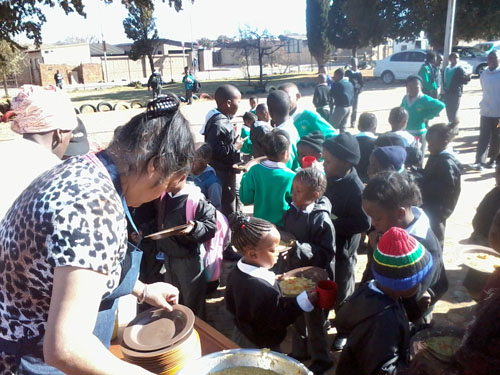
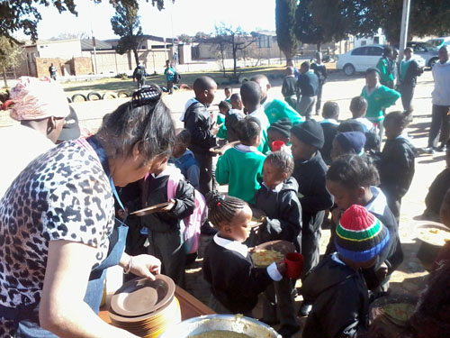

Food For Life South Africa
Creating a Hunger-Free South Africa
Creating a Hunger-Free South Africa
üìç Location: FFL GSC ‚Äì Our kitchen is currently situated at 4 Norah Street, Chrisville, Johannesburg, near Gold Reef City.
We provide meals twice or thrice a week, along with fresh fruit and biscuits, to the blind society, poor communities, homeless shelters, old age homes, and needy schools in and around Johannesburg’s southern suburbs and central areas.
We prepare nutritious, freshly cooked vegetarian meals on the day of serving and regularly require donations of LP gas, rice, sugar beans, vegetables, samp, cooking oil, and spices.
As the demand for meals continues to grow, we always need donors and volunteers to support our mission.
ü•´ Food Drop-off Point: Donations of food items can be delivered to 4 Norah Street, Chrisville, Johannesburg.
üìû Contact: Atreya Rishi Das | Cell: 081 789 3281 | Email: atreyarishi@hotmail.com
To arrange for collection, please get in touch with us.
üåü Sponsor a Feeding Program: Businesses, families, and individuals are invited to sponsor and assist our feeding program on their important and auspicious dates throughout the year. Please contact us for bookings.
Join us this July as we continue to serve nutritious meals to those in need. Here’s our feeding schedule for the month:
üì¢ Volunteers and sponsors are always welcome! Your support helps us make a lasting impact. ‚ù§Ô∏è
üóìÔ∏è September 2016 FEED


üóìÔ∏è August Feeds

üóìÔ∏è July feeds


 

üóìÔ∏è Witbank FFL, 08 July 2017

üåü Join us in spreading love and nourishment to those in need. Your support, whether through volunteering or donations, makes a huge impact!
üì© Contact us at info@fflsa.org or call 031 811 1108 to see how you can help.
Donations of food items can be delivered to our kitchen at 4 Norah Street, Chrisville.
Alternatively, you can contact our branch director, Atreya Rishi Das, at:
Cell: 081 789 3281
Email: atreyarishi@hotmail.com
Businesses, families, and individuals are also invited to sponsor and assist in our feeding programs on important dates throughout the year. Please contact us for bookings.
üíô Follow & Support Us:
#CreatingAHungerFreeNation #Charity #Nonprofit #Donate #Love #Fundraising #Community #Support #Help #Volunteer #GivingBack #MakeADifference #Hope #Change #Philanthropy
For more information or to get involved, reach out to us:
Email: info@foodforlife.org.za Phone: +27 12 345 6789 Address: 123 Compassion Street, Midrand, South Africa